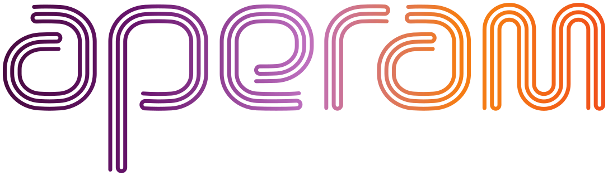

<div id="app">
  <mat-sidenav-container *ngIf="isLoggedIn" class="sidenav-container">
    <mat-sidenav #sidenav mode="side" opened class="sidenav">
      <div style="margin-top: 40px;">
        
      </div>
      <mat-action-list style="margin-top: 100px;">
        <a [routerLink]="['home']" routerLinkActive="active" mat-list-item>
          <svg-icon style="margin-left: 20px;" src="../assets/icons/layer.svg" [applyCss]="true"
            [svgStyle]="{ 'width.px':50 }" routerLinkActive="activeSvg" class="svgIconColor"></svg-icon> Overzicht
        </a>
        <a routerLink="livestream" routerLinkActive="active" mat-list-item>
          <svg-icon style="margin-left: 20px;" src="../assets/icons/stream.svg" [applyCss]="true"
            [svgStyle]="{ 'width.px':50 }" routerLinkActive="activeSvg" class="svgIconColor"></svg-icon> Livestreams
        </a>
        <a routerLink="violations" routerLinkActive="active" mat-list-item>
          <svg-icon style="margin-left: 20px;" src="../assets/icons/warning.svg" [applyCss]="true"
            [svgStyle]="{ 'width.px':50 }" routerLinkActive="activeSvg" class="svgIconColor"></svg-icon> Overtredingen
        </a>
        <a routerLink="members" routerLinkActive="active" mat-list-item>
          <svg-icon style="margin-left: 20px;" src="../assets/icons/users.svg" [applyCss]="true"
            [svgStyle]="{ 'width.px':50 }" routerLinkActive="activeSvg" class="svgIconColor"></svg-icon> Gebruikers
        </a>
      </mat-action-list>

      <div style="position: absolute; bottom: 50px; left: 70px;">
        <button (click)="logout()" style="padding-top: 5px;" mat-flat-button>
          <svg-icon src="../assets/icons/logout.svg" [applyCss]="true" [svgStyle]="{ 'fill': '#505050' }">
          </svg-icon>
          Uitloggen
        </button>
      </div>
    </mat-sidenav>
    <mat-sidenav-content>
      <mat-toolbar id="maintoolbar" class="d-flex mb-3">
        <button mat-button (click)="sidenav.toggle()">
          <mat-icon>menu</mat-icon>
        </button>
        <div class="mr-auto p-2 ml-4" style="font-size: 16px;">
          <!-- <svg-icon src="../assets/icons/search.svg" [applyCss]="true" [svgStyle]="{ 'fill': '#505050' }">
          </svg-icon>
          Zoeken... -->
        </div>
        <div class="p-2 d-flex justify-content-center align-items-center" id="notificationholder">
          <button mat-icon-button>
            <mat-icon matBadge="3" matBadgeColor="warn" matBadgePosition="above after">
              notification_important
            </mat-icon>
          </button>
        </div>
        <div class="p-2">
          <button mat-flat-button [matMenuTriggerFor]="menu" aria-label="icon-button with a menu">
            <div class="d-flex justify-content-start">
              <div class="letterIcon d-flex justify-content-center align-items-center">
                {{letter}}
              </div>
              &nbsp;
              <div class="d-flex justify-content-center align-items-center">
                {{name}} <mat-icon>keyboard_arrow_down</mat-icon>
              </div>
            </div>
          </button>
          <mat-menu #menu="matMenu">
            <button mat-menu-item>
              <mat-icon>settings</mat-icon>
              <span>Instellingen</span>
            </button>
          </mat-menu>
        </div>
      </mat-toolbar>
      <div class="m-3">
        <div style="margin-top: 60px;">
          <router-outlet ></router-outlet>
        </div>
      </div>
    </mat-sidenav-content>
  </mat-sidenav-container>
  <router-outlet name="login" *ngIf="!isLoggedIn"></router-outlet>
</div>